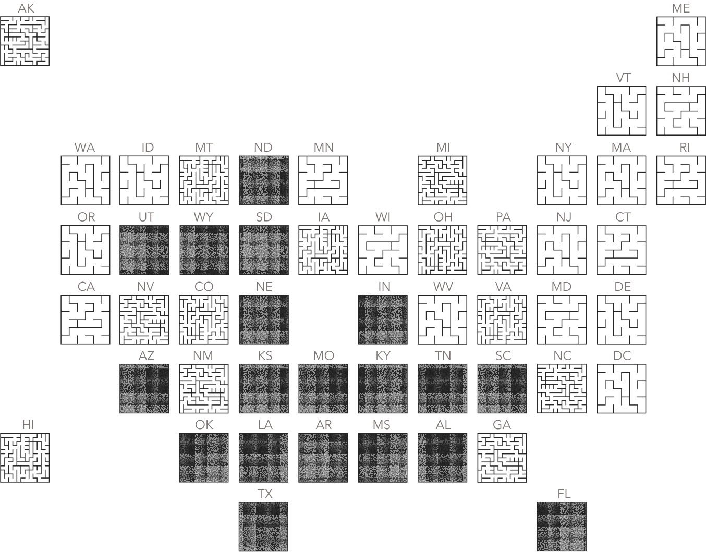

For 50 years with Roe, there was a relatively established path to abortion access…
A path to healthcare…
A path to financial stability…
A path to bodily autonomy…
But since last year, we’ve had to chart
Our Own Path
United Mazes of Abortion Access
On June 24, 2022, the US Supreme Court ruled that the right to an abortion was not protected by federal law. The impact was immediate.
Trigger bans went into effect in X states.
Conservative legislatures, emboldened by the Dobbs decision, added barrier after barrier: medication access, gestational limits, counseling requirements, insurance coverage.
Each new restriction added to an already complicated patchwork of rules and regulations across the United States, and especially in the South.
But, while some states were erecting walls, others were tearing them down, creating less complex paths to abortion.
It’s confusing, and complicated, and it doesn’t have to be this way. It’s time to chart our own path. Welcome to the…
United Mazes of Abortion Access
The Big Fall
At least 13 states had been planning for this moment.
On May 2, the Supreme Court’s upcoming ruling in Dobbs v. Jackson Women's Health Organization was leaked — they were overturning 50 years of abortion protections and precedent.
As people across the country scrambled, these states waited, knowing that abortions would soon be banned within their borders. The court opinion leak gave some advanced warning, but when the official decision was released on June 24, 2022, it didn’t matter.
People in Louisiana woke up on June 23 with abortion as an option. 24 hours later, it was illegal. Three days later it was legal again. Eleven days later: illegal. Four days later: legal. Seventeen days later: illegal.
As this back-and-forth battle for abortion access played out in the courts, Nancy Davis was caught in the crossfire.
In August 2022, Davis learned that the fetus she was carrying had a rare and fatal condition where the fetus does not form a skull. When she tried to go to an abortion clinic, it had shut down. When she tried to go to a hospital, the doctors there weren’t sure if they were allowed to help her.
Davis told the New York Times: “They threw me to the wolves. You’re telling me all this is wrong with the baby, but, ‘OK, figure it out on your own.’”
In the months after the Supreme Court’s Dobbs decision, similar stories played out again and again across the U.S.
...of those who were impacted after trigger bans went into effect — they’re the names we know about because they have chosen to publicly speak about their experiences. Countless others’ stories are unknown because they self-managed and never sought care, or couldn’t afford care, or couldn’t travel to get care, or were denied care.
WeCount, a national abortion reporting effort from the Society of Family Planning noted that “the impact of the Dobbs decision is not equally distributed.”
There were 32,260 cumulative fewer abortions following the Dobbs decision from July to December, compared to the pre-Dobbs period, with “The greatest declines in the numbers of abortion occurred in the same states with the greatest structural and social inequities in terms of maternal morbidity and mortality and poverty.”
Even knowing these inequities, some states callously ignored them, introducing ban upon ban upon ban. After the initial impact of trigger bans, X more states, including Florida moved to outlaw abortion.
Many states also began to chip away at access in other ways.
Montana, in particular, introduced over 30 bills to curtail abortion.
As these state legislatures pushed through bills that were often more extreme than what the majority of their state wanted, they ignored a groundswell of support for abortion access. The people pushed back.
The People Fight Back
From 1973 to 2022 abortions rights were protected under Roe. When the U.S. Supreme Court reversed this decision in the summer of 2022, it was met with a roar.
Thousands of people across the country took to the streets with chants of “We Won’t Go Back!” and “Bans Off Our Bodies”
Over the next few months it would become clear this assault on abortion access was part of a larger culture war, taking aim at everything from same-gender marriage to contraception to gender-affirming care.
Jonathan Mitchell, the architect behind Texas’ vigilante “bounty hunter” provision that allowed private citizens to enforce abortion law, warned that “Lawrence and Obergefell,” the Supreme Court cases that legalized sodomy and same-sex marriage were “...as lawless as Roe.”
They said the quiet part out loud. But the people were listening.
Kansas served as a lynch pin. It was the first state to vote on abortion since the Dobbs decision, and in August 2022, voters there soundly rejected a proposed state constitutional amendment that would have said there was no right to an abortion in the state.
It was a surprising victory to many people in the deeply conservative state. "It's never looked like this in Kansas.," 23-year-old Jae Moyer told NPR, "It's so amazing. I'm so proud of my state right now."
The momentum continued. In April 2023, voters upended 15 years of Republican control of the Wisconsin Supreme Court by electing liberal judge Janet Protasiewicz, pushing the court’s balance to the left and offering a pathway to strengthen abortion access in the state.
Fellow Wisconsin Supreme Court Justice Jill Karofsky told the Milwaukee Journal Sentinel that the results left her speechless. Karofsky then added: "I am so happy for the people, I am so happy for the state of Wisconsin. I think they spoke loudly…”
These election results pointed to a growing divide between conservative state lawmakers who were working to limit abortion access and the states’ voters who wanted to protect, expand, and enshrine it.
It also gave the people a roadmap of sorts to help protect and restore access, a glimmer of possibility, a confirmation of their power.
In the year since the Dobbs decision, the path to abortion has become even more complicated.
To try to capture this, we built 51 unique and playbale mazes, representing each of the 50 states and Washington D.C. The complexity of each maze is calculated using over 50 different data points (read more about these in the methodology): the more abortion restrictions, the more difficult the maze; the more abortion protections, the less difficult the maze.
Your individual path is impacted by where you live, how much money you make, your race, ethnicity, and age, your access to health care, and so many other compounding factors, but we hope these mazes serve as a starting point.